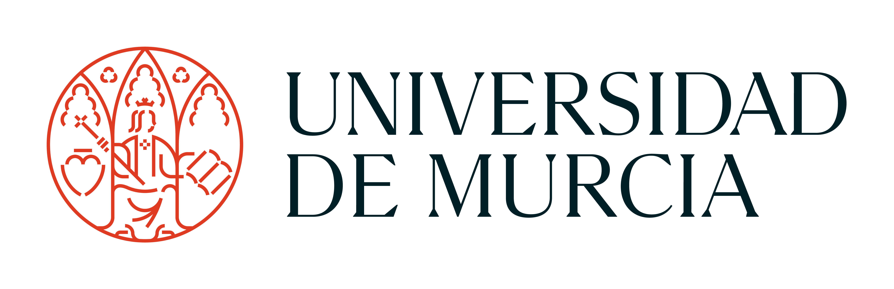
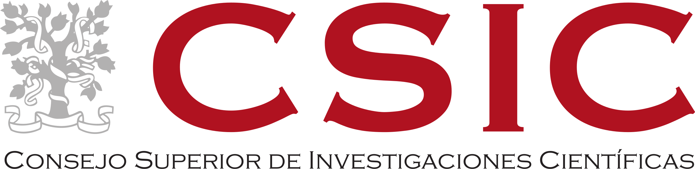
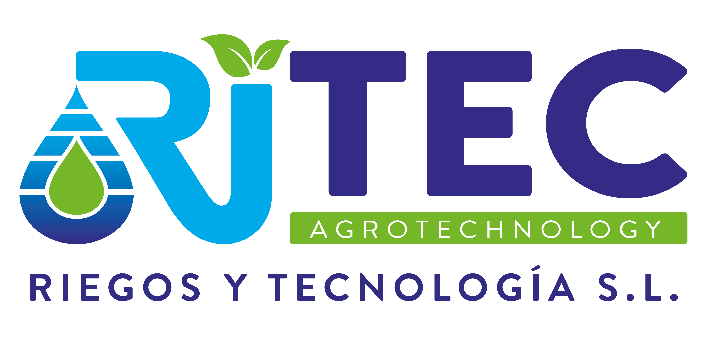

About
DEMETER 5.0 drives the digital transformation of hydroponic cotton production in controlled greenhouse environments. It combines AI, IoT sensing, blockchain traceability, and robotics to deliver a more precise, efficient, and climate-smart production model.
The initiative responds to a strategic European challenge: reducing dependence on external cotton supply while improving sustainability, operational reliability, and transparent traceability across the full agricultural value chain.
Through interoperable data infrastructures, decision-support services, and deployable automation workflows, DEMETER 5.0 translates research outcomes into real production capabilities for the agri-food sector.

Objectives
-
Objective 1
Plan and execute a blockchain-based distributed digital platform in a hydroponic cotton greenhouse scenario, integrating sensing, monitoring, and control capabilities.
-
Objective 2
Design a selective cotton harvesting framework using Robotics and AI to improve collection precision and operational efficiency.
-
Objective 3
Improve cotton productivity in Spain and Europe by minimizing water and fertilizer use through optimized fertigation management.
Enabling Capabilities
- AI-based decision-support services for irrigation, nutrition, and operational planning.
- End-to-end traceability of production events using blockchain-supported records.
- Interoperable System of Systems (SoS) integration of sensors, actuators, analytics, and control modules.
- Technology transfer and adoption support through active participation of industrial partners.
How It Works

- Multilayer SoS Orchestration: The platform coordinates heterogeneous components and services using system-level KPIs for reliability, robustness, responsiveness, and security.
- FIWARE-Based Data Management: Monitoring and control modules operate over interoperable data flows, including brokered integration of greenhouse, sensing, and external data sources.
- CPS and Edge-Cloud Control: Cyber-Physical System gateways connect sensors and actuators to local and cloud services for continuous monitoring and remote operation.
- AI + Decision Support: Analytics, modeling, and knowledge-base services generate actionable recommendations for irrigation, fertigation, and operational optimization.
- Robotics for Selective Harvesting: Vision-guided robotic systems support adaptive cotton boll detection and collection with improved quality and repeatability.
- Blockchain Traceability and Data Governance: Critical production events are recorded in distributed ledgers to improve transparency, verifiability, and trusted data sharing.
- Iterative Validation Loop: The workflow follows sensing, analysis, decision, actuation, and verification cycles to continuously refine agronomic and technical performance.
Impact
DEMETER 5.0 is expected to deliver measurable impact across agronomic performance, digital innovation, industrial uptake, and sustainability governance, in direct alignment with the project memory.
Agronomic Impact
Precision irrigation and fertigation strategies target lower water and fertilizer use, improved crop control, and better consistency in cotton fiber quality and productivity.
Technological Impact
The project validates integrated operation of IoT, AI, CPS, robotics, and blockchain within a real greenhouse production setting, strengthening Agriculture 5.0 readiness.
Economic And Industrial Impact
Traceable, data-driven workflows improve value-chain trust and support transfer of deployable technology outcomes to participating industrial partners.
Sustainability And Governance
Blockchain-backed records enhance transparency, verifiability, and trusted data exchange, supporting green-transition objectives and responsible production practices.
Consortium
The consortium combines complementary scientific, technological, and industrial capabilities to ensure both research quality and application readiness.



Publications & Contributions
This section gathers DEMETER 5.0 publications and technical contributions, including validated results, deployment insights, and traceability evidence.